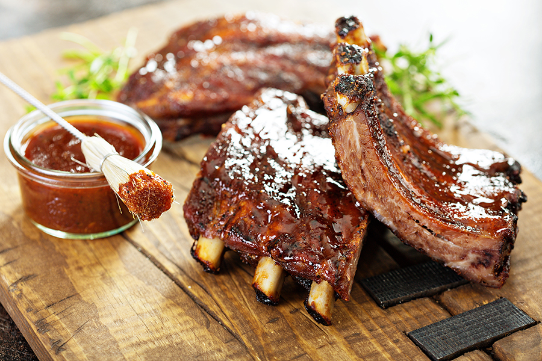
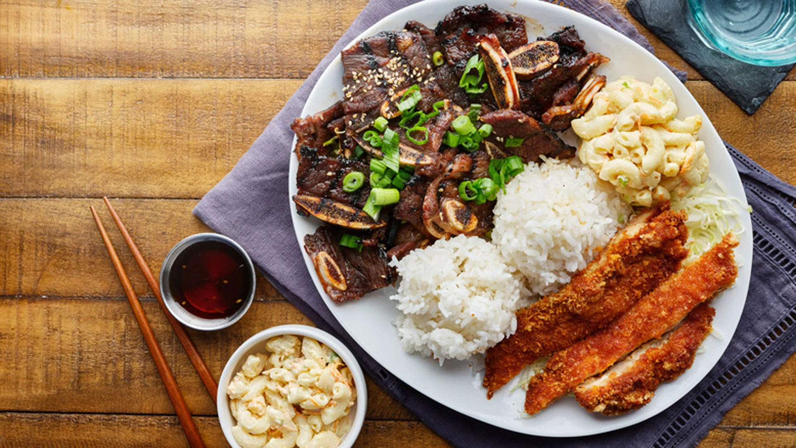
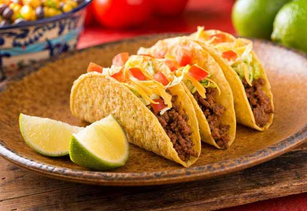
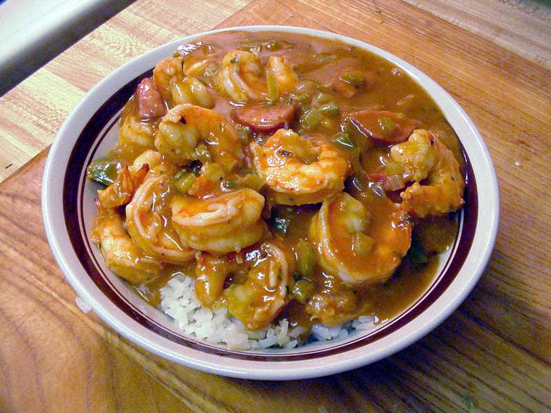

Southern Cuisine / Soul Food

Key Features: Rich, comforting, slow-cooked dishes rooted in African-American traditions.
Common Ingredients: Cornmeal, collard greens, sweet potatoes, pork, butter, beans.
Popular Dishes: Fried chicken, cornbread, mac & cheese, collard greens, peach cobbler.
Regional Styles: Deep South (traditional soul food), Lowcountry (seafood), Appalachian (simple, rustic dishes).
Barbecue (BBQ) Styles
Key Features: Slow-cooked, smoked meats with regional rubs and sauces.
Common Ingredients: Beef, pork ribs, spice rubs, smoke wood (hickory, mesquite), vinegar sauces.
Popular Dishes: Smoked brisket, pulled pork, ribs, burnt ends.
Regional Styles: Texas (beef-heavy), Carolina (vinegar/mustard), Memphis (dry rub), Kansas City (sweet tomato sauce).
Hawaiian Cuisine
Key Features: Tropical, fresh island cooking blending Polynesian, Japanese, and American influences.
Common Ingredients: Pineapple, taro, pork, seafood, rice, soy sauce.
Popular Dishes: Poke, Kalua pork, Loco Moco, Spam musubi.
Regional Styles: Traditional Hawaiian (taro/poi), Local Hawaiian (fusion), Plantation-style (Asian influences).
Tex-Mex Cuisine
Key Features: Bold fusion of Mexican flavors with Texas-style meats and cheese-heavy dishes.
Common Ingredients: Tortillas, beans, chili peppers, beef, cheese, cumin.
Popular Dishes: Tacos, Nachos, Burritos, Quesadillas, Chili con Carne.
Regional Styles: Border Tex-Mex (authentic Mexican influence), Central Texas (beef-heavy), Urban Tex-Mex (modern fusion).
Cajun Cuisine
Key Features: Spicy, rustic Louisiana cooking with one-pot meals and French-Acadian roots.
Common Ingredients: Trinity mix (onion, celery, bell pepper), spices, sausage, seafood, rice.
Popular Dishes: Jambalaya, Gumbo, Crawfish Étouffée, Boudin.
Regional Styles: Prairie Cajun (meat-heavy), Bayou Cajun (seafood), Swamp Cajun (wild game influences).